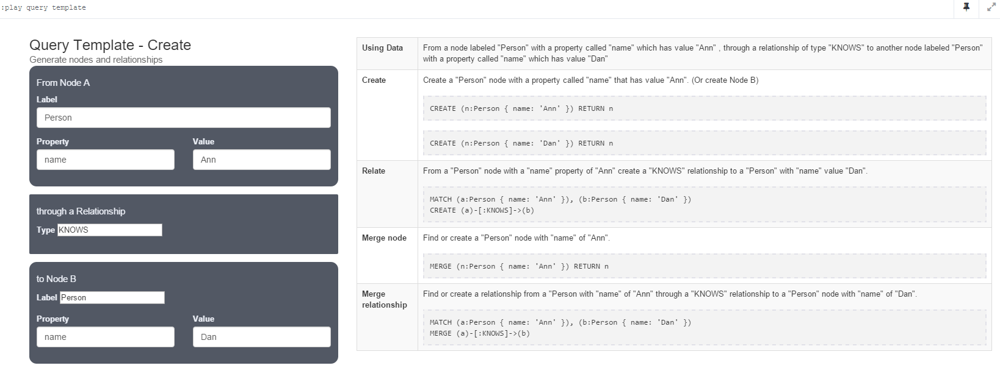
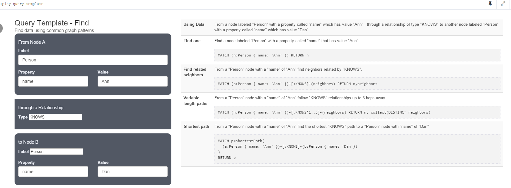

Explore the World of Graphs – From Query Efficiency to Business Performance
关于图形数据库
图形数据库是一种非关系型数据库，它应用图形理论存储实体之间的关系信息。最常见的一个例子，就是社会网络中人与人之间的关系。
- 当前有流行图形数据库：Neo4j、FlockDB、AllegroGraph、GraphDB、InfiniteGraph、OrientDB、InfoGrid和HypergraphDB等等，
另有自称比MongoDB和Neo4j性能更佳的多模型数据库ArangoDB,见nosql-tests - 关系型数据库用于存储“关系型”数据的效果并不好，其查询复杂、缓慢、超出预期，而图形数据库的独特设计恰恰弥补了这个缺陷。
Neo4j简介
官方Manual
参考full-stack-web-development-using-neo4j
Neo4j是一个用Java实现、完全兼容ACID的图形数据库。数据以一种针对图形网络进行过优化的格式保存在磁盘上。Neo4j的内核是一种极快的图形引擎，具有数据库产品期望的所有特性，如恢复、两阶段提交、符合XA等。自2003年起，Neo4j就已经被作为24/7的产品使用。
Neo4j是目前主流的一个图数据库，相比传统的关系型数据库，它可以快速的进行基于人际社交网络类的查询查询和检索;它同时提供了cypher语言来方便进行图数据库的操作和查询，该查询语言类似SQL语言。
Neo4j的数据并非保存在表或集合中，而是保存为节点以及节点之间的关系。在Neo4j中，节点以及关系都能够包含保存值的属性，此外：
- 可以为节点设置零或多个标签（例如Author或Book）
- 每个关系都对应一种类型（例如WROTE或FRIEND_OF）
- 关系总是从一个节点指向另一个节点（但可以在不考虑指向性的情况下进行查询）
为什么要选择Neo4j？
在考虑为web应用选择某个数据库时，我们需要考虑对它有哪些方面的期望，其中最重要的一些条件包括：
- 它是否易于使用？
- 它是否允许你方便地回应对需求的变更？
- 它是否支持高性能查询？
- 是否能够方便地对其进行数据建模？
- 它是否支持事务？
- 它是否支持大规模应用？
- 它是否足够有趣（很遗憾的是对于数据库的这方面要求经常被忽略）？
从这以下几个方面来说，Neo4j是一个合适的选择。Neo4j……
- 自带一套易于学习的查询语言（名为Cypher）
- 不使用schema，因此可以满足你的任何形式的需求
- 与关系型数据库相比，对于高度关联的数据（图形数据）的查询快速要快上许多
- 它的实体与关系结构非常自然地切合人类的直观感受
- 支持兼容ACID的事务操作
- 提供了一个高可用性模型，以支持大规模数据量的查询，支持备份、数据局部性以及冗余
- 提供了一个可视化的查询控制台，你不会对它感到厌倦的
什么时候不应使用Neo4j？
作为一个图形NoSQL数据库，Neo4j提供了大量的功能，但没有什么解决方案是完美的。在以下这些用例中，Neo4j就不是非常适合的选择：
- 记录大量基于事件的数据（例如日志条目或传感器数据）
- 对大规模分布式数据进行处理，类似于Hadoop
- 二进制数据存储
- 适合于保存在关系型数据库中的结构化数据
虽然Neo4j也能够处理“大数据”，但它毕竟不是Hadoop、HBase或Cassandra，通常来说不会在Neo4j数据库中直接处理海量数据（以PB为单位）的分析。但如果你乐于提供关于某个实体及其相邻数据关系（比如你可以提供一个web页面或某个API返回其结果），那么它是一种良好的选择。无论是简单的CRUD访问，或是复杂的、深度嵌套的资源视图都能够胜任。
虽然关系型数据库对于保存结构化数据来说依然是最佳的选择，但NoSQL数据库更适合于管理半结构化数据、非结构化数据以及图形数据。如果数据模型中包括大量的关联数据，并且希望使用一种直观的、有趣的并且快速的数据库进行开发，那么可以考虑尝试Neo4j。
Neo4j图模型
Neo4J中的图形模型要点：Nodes与Relationships可以被赋予Properties(key-value); Nodes可按label分组；Relationships可赋予direction和type并最终构成数据形态；Neo4j可存储10亿级别的数据量
Neo4J使用以下索引机制：一个超级参考节点通过一条特殊类别的边线“REFERENCE”与所有节点相连。这实际上允许创建多个索引，借以通过不同的边线类别对其加以区分。Neo4J还提供了一些特殊功能，如列出特定节点的相邻诸节点或是两节点间长度最短的诸类路径等。注意要使用上述各类“遍历”功能，Neo4J要求指定路径中经过的边线类别。
版本
enterprise和community公共特性1
2
3
4
5
6
7
8Property Graph Model
Native Graph Processing & Storage
ACID
Cypher – Graph Query Language
Language Drivers most popular languages
REST API
High-Performance Native API
HTTPS (via Plug-in)
enterprise性能扩展特性1
2
3
4
5
6
7Enterprise Lock Manager
Cache Sharding
Clustered Replication
Cypher Query Tracing
Property Existence Constraints
Hot Backups
Advanced Monitoring
嵌入式使用
可不必将Neo4J作为软件加以安装。可在项目中导入JAR文件来建立嵌入式图形数据库，该操作将在硬盘上建立对应的目录，类似sqlite。
High Availability
Neo4j HA(Neo4j High Availability)，高可用性主要指其包含容错机制和可进行水平扩展，即Neo4j Cluster
Neo4j相关技术选型
所有主流的编程语言都通过HTTP_API的方式支持Neo4j，或者采用基本的HTTP类库，或是通过某些原生的类库提供更高层的抽象。此外，由于Neo4j是以Java语言编写的，因此所有包含JVM接口的语言都能够充分利用Neo4j中的高性能API。
Neo4j本身也提供了一个“技术栈”，它允许你选择不同的访问方式，包括简单访问乃至原生性能等等。它提供的特性包括：
- 通过一个HTTP API执行Cypher查询，并获取JSON格式的结果
- 一种“非托管扩展”机制，允许你为Neo4j数据库编写自己的终结点
- 通过一个高层Java API指定节点与关系的遍历
- 通过一个低层的批量加载API处理海量初始数据的获取
- 通过一个核心Java API直接访问节点与关系，以获得最大的性能
Spring Data for Neo4j
doc-api
The Spring Data Neo4j Guide Book
demo
- spring-data-neo4j
Spring Data Neo4j - spring-data-neo4j-rest
pring Data Neo4j Wrapper for the Neo4j REST API, provides a Graph Database proxy for the remote invocation - spring-data-neo4j-aspects
Advanced Mapping support for Spring Data Neo4j
Cypher
Cypher(Neo4j’s graph query language)，类似SQL
Cypher为ASCII风格的语法，它在括号内表示节点名称，并用箭头表示一个节点指向另一个节点的关系。Cypher通过这种方式允许你匹配某个指定的子图形模式。
Create
Create(Create Nodes and Relationships)
1
CREATE (ee:Person { name: "Emil", from: "Sweden", klout: 99 })
# () parenthesis to indicate a node
# ee:Person a variable 'ee' and label 'Person' for the new node
# {} brackets to add properties to the node
CREATE多个Nodes和Relationships
MATCH (ee:Person) where ee.name = "Emil"
CREATE (js:Person { name: "Johan", from: "Sweden", learn: "surfing" }),
(ir:Person { name: "Ian", from: "England", title: "author" }),
(rvb:Person { name: "Rik", from: "Belgium", pet: "Orval" }),
(ally:Person { name: "Allison", from: "California", hobby: "surfing" }),
(ee)-[:KNOWS {since: 2001}]->(js),(ee)-[:KNOWS {rating: 5}]->(ir),
(js)-[:KNOWS]->(ir),(js)-[:KNOWS]->(rvb),
(ir)-[:KNOWS]->(js),(ir)-[:KNOWS]->(ally),
(rvb)-[:KNOWS]->(ally)

MATCH
MATCH(Finding nodes)1
2
3
4
5MATCH (ee:Person) WHERE ee.name = "Emil" RETURN ee;
# (ee:Person) a single node pattern with label 'Person' which will assign matches to the variable 'ee'
# WHERE clause to constrain the results
# ee.name = "Emil" compares name property to the value "Emil"
# RETURN clause used to request particular results
Pattern matching
Pattern matching(Describe what to find in the graph)

1 | # find Emil's friends: |
Recomennd
Pattern matching can be used to make recommendations，这个赞，天然的可以进行推荐，如六度分割（Six Degrees of Kevin Bacon），即Bacon Path最短路径问题1
2
3
4
5# Johan is learning to surf, so he may want to find a new friend who already does:
MATCH (js:Person)-[:KNOWS]-()-[:KNOWS]-(surfer) WHERE js.name = "Johan" AND surfer.hobby = "surfing" RETURN DISTINCT surfer
# ()empty parenthesis to ignore these nodes
# DISTINCTbecause more than one path will match the pattern
# surferwill contain Allison, a friend of a friend who surfs
Analyze
可视化查询计划理解Cypher查询如何工作（EXPLAIN/PROFILE）1
2
3PROFILE MATCH (js:Person)-[:KNOWS]-()-[:KNOWS]-(surfer)
WHERE js.name = "Johan" AND surfer.hobby = "surfing"
RETURN DISTINCT surfer
Neo4j可用性测试
读写性能测试
Neo4j性能优化配置
neo4j-configuration-introduction
- 确认JVM没有在GC垃圾回收上耗费太多时间,以确保有足够的heap避免heavy/peak引起GC-trashing时，GC-trashing时性能会下降两个数量级
- JVM以-server参数启动，并设置一个合理的heap size，太大的heap也会损害性能，所以需要尝试不同的heap size
- 用并发的GC垃圾回收器，在大多数情况下
-XX:+UseG1GC是最佳实践 - 给Neo4j page cache 设置大量的内存，在一个专用服务器上，需要平衡4大部分内存分配：操作系统、Neo4j JVM、Neo4j page cache和Neo4j Lucene全文索引用到的paging memory
- 服务器操作系统一般需要1到2GB的内存，服务器物理内存越大，操作系统需要分配的内存越大；
- 由于Neo4j JVM和内存回收器的head-room消耗，需要足够大的heap memory用来进行事物状态和查询处理；因为工作负载非常依赖heap memory，所以配置heap memory从1G到32G都很常见；
- Neo4j page cache 最好有足够的内存来保持整个数据集在内存中，也就是说page cache应该足够大，以适应所有的neostore. 文件（不是neostore.transaction.db. 文件）；
- 配置足够的操作系统page cache以适应索引的内容和schema目录,因为如果索引不能装入内存,它将会影响索引查找性能；